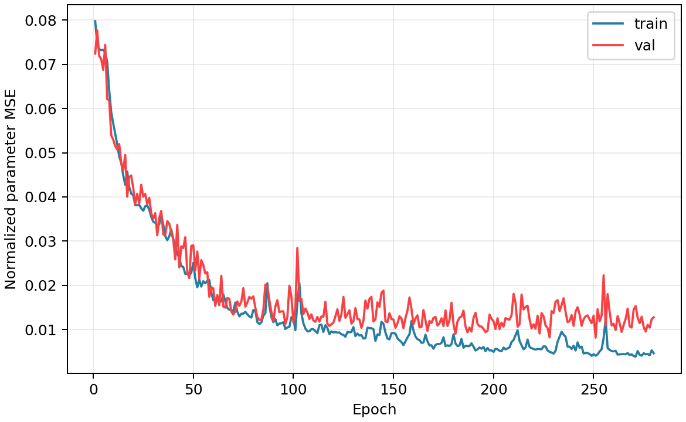
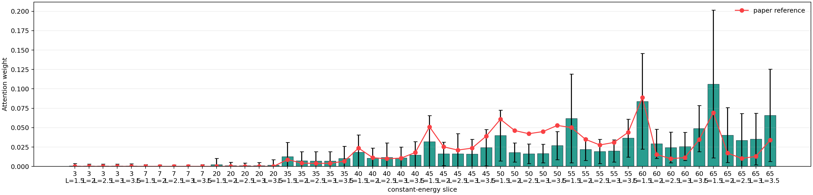

LNO327 CNN 训练任务报告
任务
| status | done |
|---|
| elapsed | 4.5 min |
|---|
| output | runs/cloud_fwhm10_n512/gated4d_wide_fwhm10_n512_seed20260526_e280_b64 |
|---|
结果
| test mean range-normalized MAE | 5.44% |
|---|
| test overall MAE | 0.537633 meV |
|---|
| test overall RMSE | 1.23958 meV |
|---|
| best epoch | 251 |
|---|
| best val loss | 0.00815346 |
|---|
解释性指标
| gate test mean | 0.544206 |
|---|
| gate test std | 0.392378 |
|---|
可视化

训练 loss 曲线

4D attention 权重
日志尾部
[task] start mode=gated4d out=runs/cloud_fwhm10_n512/gated4d_wide_fwhm10_n512_seed20260526_e280_b64
trainable scope=all trainable=105104/105104
epoch 0001 train_loss=0.0797602 val_loss=0.0724131 best_val=0.0724131
epoch 0010 train_loss=0.0566165 val_loss=0.0529494 best_val=0.0529494
epoch 0020 train_loss=0.0403867 val_loss=0.0419567 best_val=0.0400385
epoch 0030 train_loss=0.0343874 val_loss=0.0350953 best_val=0.0350953
epoch 0040 train_loss=0.0305036 val_loss=0.0303596 best_val=0.0303596
epoch 0050 train_loss=0.0250805 val_loss=0.0290477 best_val=0.0216337
epoch 0060 train_loss=0.0165976 val_loss=0.0192715 best_val=0.0174057
epoch 0070 train_loss=0.0141422 val_loss=0.0133741 best_val=0.0133741
epoch 0080 train_loss=0.0143988 val_loss=0.0174868 best_val=0.0133741
epoch 0090 train_loss=0.0116442 val_loss=0.011861 best_val=0.011861
epoch 0100 train_loss=0.0126219 val_loss=0.0116058 best_val=0.0112541
epoch 0110 train_loss=0.0100568 val_loss=0.0120471 best_val=0.0112541
epoch 0120 train_loss=0.00931221 val_loss=0.0115577 best_val=0.0107939
epoch 0130 train_loss=0.0105427 val_loss=0.011852 best_val=0.0107939
epoch 0140 train_loss=0.0100431 val_loss=0.0118005 best_val=0.010355
epoch 0150 train_loss=0.00916654 val_loss=0.0122473 best_val=0.010355
epoch 0160 train_loss=0.00974009 val_loss=0.0112123 best_val=0.0102989
epoch 0170 train_loss=0.00564826 val_loss=0.0126155 best_val=0.00966237
epoch 0180 train_loss=0.00891416 val_loss=0.0111828 best_val=0.00966237
epoch 0190 train_loss=0.00611002 val_loss=0.0126372 best_val=0.00901343
epoch 0200 train_loss=0.00493435 val_loss=0.0118531 best_val=0.00901343
epoch 0210 train_loss=0.00762247 val_loss=0.0180653 best_val=0.00901343
epoch 0220 train_loss=0.00559751 val_loss=0.0111656 best_val=0.00901343
epoch 0230 train_loss=0.00454703 val_loss=0.0137166 best_val=0.00819749
epoch 0240 train_loss=0.00632582 val_loss=0.0107952 best_val=0.00819749
epoch 0250 train_loss=0.00439569 val_loss=0.0131306 best_val=0.00819749
epoch 0260 train_loss=0.00505711 val_loss=0.0113063 best_val=0.00815346
epoch 0270 train_loss=0.00398756 val_loss=0.0145018 best_val=0.00815346
epoch 0280 train_loss=0.00462386 val_loss=0.0127536 best_val=0.00815346
[task] best_epoch=251
[task] test_mean_range_mae=0.0544314